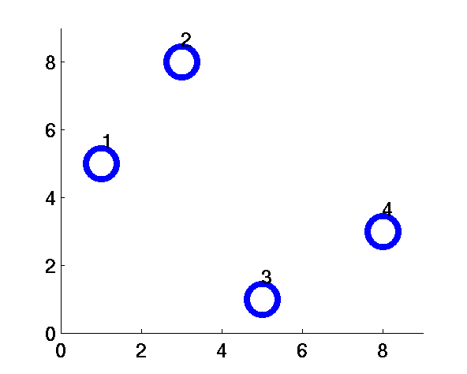
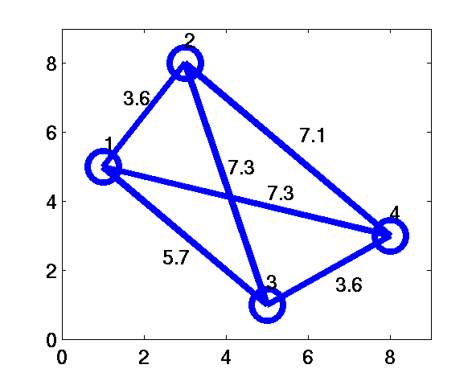
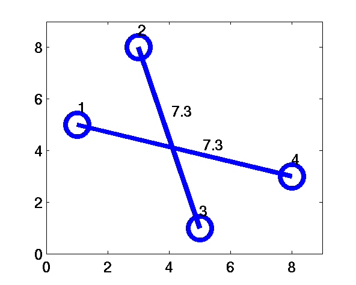

The objective of this experiment is to demonstrate different annealing strategies in the solutions to optimization problems using a
Hopfield model. This is illustrated using the weighted matching problem as a case study.
The optimization is guided by the activation dynamics of a Hopfield network.
The activation dynamics is guided by the energy surface defined by the activation states of the units in the Hopfield network.
The three relaxation strategies studied are:
(a) Deterministic relaxation
(b) Stochastic relaxation
(c) Mean-field approximation

Optimization
One of the most successful applications of neural network principles is in solving optimization problems. There are many situations where a problem can be formulated as minimization or maximization of some cost function or objective function subject to certain constraints. It is possible to map such a problem onto a feedback network, where the units and connection strengths are identified by comparing the cost function of the problem with the energy function of the network expressed in terms of the state values of the units and the connection strengths. The solution to the problem lies in determining the state of the network at the global minimum of the energy function. In this process, it is necessary to overcome the local minima of the energy function. This is accomplished by adopting a simulated annealing schedule for implementing the search for global minimum [Kirkpatric et al,1983].
The solution to an optimization problem by neural networks consists of the following steps:
- (a) Express the objective function or the cost function and the constraints
of the given problem in terms of the variables of the problem:
\(Objective\) \(function ~ (E)\) \(:\) \(cost+global~constraints\)
(b) Compare the objective function in above equation with the energy function (given in equation below) of a feedback neural network of Hopfield type to identify the states and the weights of the network in terms of variables and parameters appearing in the objective function.
\(Energy\) \(function: E = -\frac{1}{2}\sum\limits_{i\ne j} w_{ij}s_is_j \qquad(1) \)
\(w_{ij}\) : weight connecting unit \(j\) to unit \(i\)
\(s_i, s_j\) : state values
-
(c) The solution to the optimization problem consists of determining
the state corresponding to the global minimum of the energy function
of the network. Assuming bipolar states for each unit, the
dynamics of the network can be expressed as
\(s_i(t+ 1) = sgn(\sum\limits_{j\ne i}w_{ij}s_j(t))\) , for \(i=1,2, .. ,N \qquad(2)\)
where \(N\) is the number of units in the network.
-
(d) Direct application of the above dynamics in search of a stable
state may lead to a state corresponding to a local minimum of the
energy function. In order to reach the global minimum, passing by the
local minima, the concept of stochastic update is used in the activation
dynamics of the network. And for a stochastic update the state of the unit
is updated using a probability law, which is controlled by a temperature
parameter (T). At low temperatures, the stochastic update approaches
the deterministic update, which is dictated by the output function of the unit.
-
(e) The state of a neural network with stochastic update is described
in terms of a probability distribution. The probability distributions of
the states at thermal equilibrium follow the Boltzmann-Gibb's law
, namely
\(P(s_\alpha)=(1/Z)e^{-E_\alpha /T} \qquad(3)\)
where \(E_\alpha\),is the energy of the network in the state \(s_\alpha\) and \(Z\) is the partition function given by
\(Z = \sum\limits_{\alpha}e^{-E_\alpha/T} \qquad(4)\)
The network is allowed to relax to thermal equilibrium at a given temperature (T). Due to stochastic update the state of the network does not remain constant at thermal equilibrium. But the average value of the state of the network remains constant due to stationarity of the probabilities \(P(s_\alpha)\) of the states of the network at thermal equilibrium. The average value of the state vector in given by
\(s^{av} = \sum\limits_{\alpha} s_\alpha P(s_\alpha) \qquad(5)\)
(f) At higher temperatures many states are likely to be visited, irrespective of the energies of those states. Thus the local minima of the energy function can be escaped. As the temperature is gradually reduced, the states having lower energies will be visited more frequently. Finally, at T = 0, the state with the lowest energy will have the highest probability. Thus the state corresponding to the global minimum of the energy function can be reached, escaping the local minima. This method of search for the global minimum of the energy function is called simulated annealing. Implementation of simulated annealing requires computation of stationary probabilities at thermal equilibrium for each temperature in the annealing schedule. Moreover, the convergence to the global minimum is guaranteed only if the temperature parameter is reduced slowly starting from a high value initially [Geman and Geman, 1984]. The probabilities of the states are computed by collecting the distribution of the states after a large number of cycles of updates of the states of the network at a given temperature. The cycles are repeated until the probabilities of states do not change substantially for different sets of cycles. Once thermal equilibrium is reached, the temperature is changed to the next lower value. Thus the process of implementation of simulated annealing is very slow.
-
(g) In order to speed up the process of simulated annealing, the
mean-field annealing approximation is used [Peterson and Anderson,
1987], in which the stochastic update of the binary/bipolar units is
replaced by deterministic analog states [Glauber, 1963]. The basic
idea of mean-field approximation is to replace the fluctuating activation
values of each unit by its average value. That is \(x_i\) is
replaced by \(x^{av}\).
\(x^{av} = (\sum\limits_{j} w_{ij}s_j)^{av}\) \(=\) \(\sum\limits_{j}w_{ij}s_j^{av} \qquad(6)\)
where \(x^{av}\) represents the expectation in average of the random quantities. Likewise, in the average of the state of the \(i^{th}\) unit given by
\(x^{av} = tanh\{(x_i)/T \} \qquad(7)\)
If \(x_i\) is replaced by \(x^{av}\), we get from above equations
\(s_i^{av} = tanh\{\frac{1}{T} \sum\limits_{j} w_{ij} s_j^{av})\} \qquad(8)\)
The mean-field approximation involves solving the following recursive equations involving the average values of the states of the units.
\( s_i^{av}(t+1) = tanh\{\frac{1}{T} \sum\limits_{j=1}^N w_{ij} s_j^{av})\} \) ; \(i = 1,2, .... ,N \qquad(9)\)
These are a set of coupled nonlinear deterministic equations. The equations are solved iteratively starting with some arbitrary values \(s_i^{av}(0)\) initially. Once the steady equilibrium values of \(s_i^{av}\) are obtained, then the temperature is lowered. The next set of average states at thermal equilibrium are determined using the average state values of the previous thermal equilibrium condition as the initial values \(s_i^{av}(0)\) in the equations above for iterative solution. Note that, due to the deterministic set of equations involved in this computation, the computation will be much faster than in the case of simulated annealing. While convergence to global minimum is not guaranteed in the mean-field approximation, it yields good results [Haykin, 1994]

Weighted matching problem
Given a set of N points along with the distances between each pair of points, find an optimal pairing of the points such that the total length of the distances of the pairs is minimum.
Example:
Consider N=4 points as shown in Figure 1 (a). The distances between each pair of points is given in Figure 1 (b).
|  |  |
| Figure 1 (a) | Figure 1 (b) |
The possible pairing of points are given in Figures 2 (a) to 2 (c).
 |
 |
 |
| Figure 2 (a): L=7.2 | Figure 2 (b): L=12.8 | Figure 2 (c): L=14.6 |
The total length of the paired links (\( L=\sum\limits_{i\lt j}d_{ij}n_{ij} \)) are 7.2, 12.8 and 14.6, respectively.
Therefore, Fig.2a is the solution to this weighted matching problem.

Go through the example presented, so as to understand the operation being done in the experiment to optimize the weighted matching problem.
Select the type of relaxation.
Select a graph type with given number of nodes along with the location of the nodes in a 2-D plane.
Click on 'Init' to initialize the graph.
After observing the set of points generated and the equations used to optimize the weighted graph, click on 'Anneal' to start annealing the network.
Go through the output of the problem and the output states of nodes after each update.

Deterministic relaxation can get stuck in local minima depending on the starting point.
Stochastic relaxation uses simulated annealing at different temperatures with probablistic update, which can help the network get out of the local minima, to settle for a deeper minima.
Stochastic relaxation can take time to reach equilibrium.
Mean-field annealing is used to speed up the process.
What is a local minima problem in optimization ?
How is mean-field annealing applied in the solution of optimization problems?
Discuss the solution to the Traveling salesman problem using deterministic relaxation and stochastic relaxation.
Hint: Refer [Yegnanarayana, 1999, pg. 299] and [Wilson and Pawley, 1988]

B. Yegnanarayana, Artificial Neural Networks, New Delhi, India : Prentice-Hall of India, p. 293, 1999.
C. Peterson and B. Soderberg, "Neural optimization", in The Handbook of Brain Theory and Neural Networks (M.A. Arbib, ed.), Cambridge, MA: MIT Press, pp. 617-621, 1995.
J.A. Hertz, A. Krogh, and R.G. Palmer, Introduction to the Theory of Neural Computation, New York: Addison-Wesley, 1991.
B. Muller and J. Reinhardt, Neural Networks: An Introduction, Physics of Neural Networks, New York: Springer-Verlag, 1991.
A.L. Yuille, "Constrained optimization and the elastic net", in The Handbook of Brain Theory and Neural Networks (M.A. Arbib, ed.), Cambridge, MA. MIT Press, pp. 250-255, 1995.
S. Geman and D. Geman, "Stochastic relaxation, Gibbs distributions, and the Bayesian restoration of images", IEEE Trans. Pattern Analysis and Machine Intelligence, vol. 6, pp. 721-741, 1984.
N. Metropolis, A.W. Rosenbluth, M.N. Rosenbluth, A.H. Teller, and E. Teller, "Equation of state calculations by fast computing machines", J. Chem. Phy., vol. 21, no. 6, pp. 1087-1092, 1953.
C. Peterson and J.R. Anderson, "A mean field theory learning algorithm for neural networks", Complex Systems, .vol. 1, pp. 995-1019, 1987.
R.J. Glauber, "Time-dependent statistics of the Ising model", J. Math. Phys., vol. 4, pp. 294-307, 1963.
S. Haykin, Neural Networks: A Comprehensive Foundation, New York: Macmillan College Publishing Company Inc., 1994.